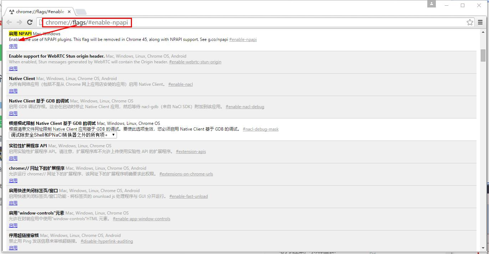
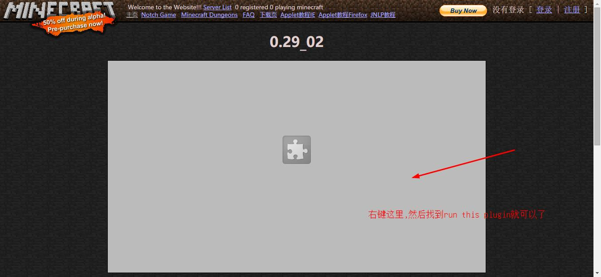

Minecraft 旧版
Applet教程
这是对于旧版Chrome的教程
（本教程使用了Chrome 44版本，32位浏览器）
1. 先去Java.com下载32位的Java8。去官网
2.安装完Java8之后，去下载旧版32位Chrome浏览器，因为Chrome 45版本的32位浏览器开始不支持Java applet（点这下载）
3.在网页框内输入chrome://flags/#enable-npapi，然后启用NPAPI插件，重启chrome就可以了

4.Applet不会自动运行，请右键Applet窗口，点击Run this plugin就行了

5.Java小程序被安全阻止，请按照IE启用Applet教程的第二步，点这里快速传送